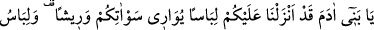
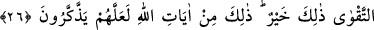
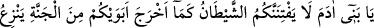
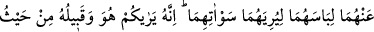
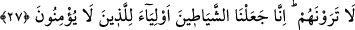
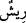

TAKVA ELBİSESİ
26. Ey Âdem oğulları! Size ayıp yerlerinizi örtecek giysi, süslenecek elbise
yarattık. Takvâ elbisesi... İşte o daha hayırlıdır. Bunlar Allah’ın ayetlerindendir.
Belki düşünüp öğüt alırlar (diye onları indirdi).
27. Ey Âdem oğulları! Şeytan, ana-babanızı, ayıp yerlerini kendilerine göstermek
için elbiselerini soyarak cennetten çıkardığı gibi sizi de aldatmasın. Çünkü o ve
yandaşları, sizin onları göremeyeceğiniz yerden sizi görürler. Şüphesiz biz
şeytanları, inanmayanların dostları kıldık.
“Ey Âdem oğulları,” hitabı bütün insanlaradır.
Rivayet edilir ki Cahiliye döneminde Araplar Beytullah’ı çıplak olarak tavaf
ederlerdi ve “Biz, içinde Allah’a isyan ettiğimiz elbiselerle tavaf yapmayız.” derlerdi.
İşte bu üç ayet (26-28) bu konu hakkında nazil olmuştur.
“size çirkin yerlerinizi” avret yerlerinizi “örtecek giysi, süslenecek” tüylü ve süslü
“elbise indirdik.” Yani gökten onun sebebini indirerek sizin için yarattık demektir. O
sebep ise yağmur suyudur. Yerden biten pamuk ve keten yağmur suyu ile hâsıl olur. Yine
elbise imalinde hayvanların yünleri kullanılır. Hayvanların yaşaması da gökten inen
suya bağlıdır.
Bil ki sema etken, yer edilgendir. Yeryüzünde olup biten hâdiseler, göğe bağlıdır ve
ona nisbet edilir. Yeryüzündeki her şey, Hakk’ın semâvî tedbirleri ile
yönlendirilmektedir.
Elbise ile örtünme imkanı varken avret yerinin açılması, çirkinliklerin en kötü
olanıdır. Âdem (a.s.) ile Havva validemizi aldatan İblis, avret yerlerini açan diğer
insanları da hiç şüphesiz aldatmış demektir. Çünkü o, Âdem ile Havva’yı aldattığı vakit
ilk önce onların avret yerleri açılmıştı. İblis’in şerrinden Allah’a sığınırız.
Ayette “süslenmek”, aralarındaki benzerlik sebebiyle “” (tüy) kelimesi ile ifade
edilmiştir. Çünkü elbise Âdemoğlunun süsü olduğu gibi kuşun tüyleri de onun en tabii
ziyneti, vazgeçilmez süsüdür.
Ayette sanki şöyle buyurulmaktadır: “Size iki elbise indirdik: Çirkin yerlerinizi